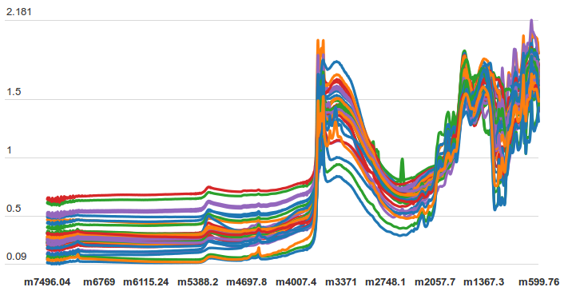
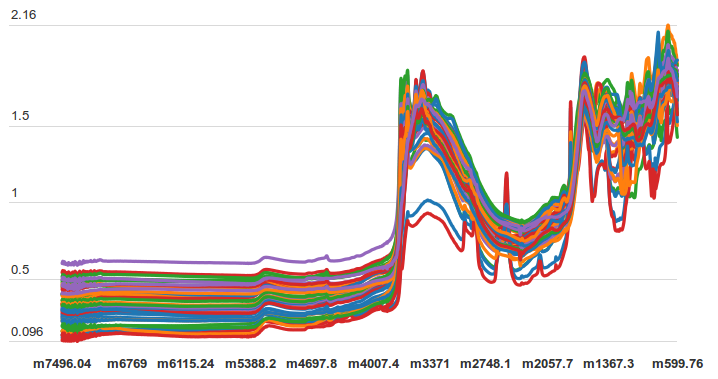
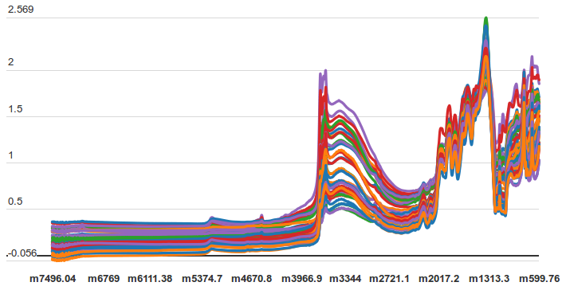

Soil Property Analysis
View the Project on GitHub sanketbhamare2121/Soil-Property-Analysis
Detect soil’s capacity to support essential ecosystem services such as primary productivity, nutrient and water retention, and resistance to soil erosion. Low cost analysis of soil samples using infrared spectroscopy, georeferencing of soil samples.
Predict target soil functional properties from diffuse reflectance infrared spectroscopy measurements. Digital mapping of soil functional properties is important for planning sustainable agricultural intensification and natural resources management. Specially useful in remote and unexposed areas like Africa.
  Dataset from Kaggle of diffuse reflectance infrared spectroscopy measurements.(50 MB) 3595 input variables/features (soil properties) SOC, pH, Ca, P, Sand are the five target variables for predictions. PIDN: unique soil sample identifier SOC: Soil organic carbon pH: pH values Ca: Mehlich-3 extractable Calcium P: Mehlich-3 extractable Phosphorus Sand: Sand content There are 3,578 mid-infrared absorbance measurements.
Phosphorus concentration
SOC concentration
Sand concentration